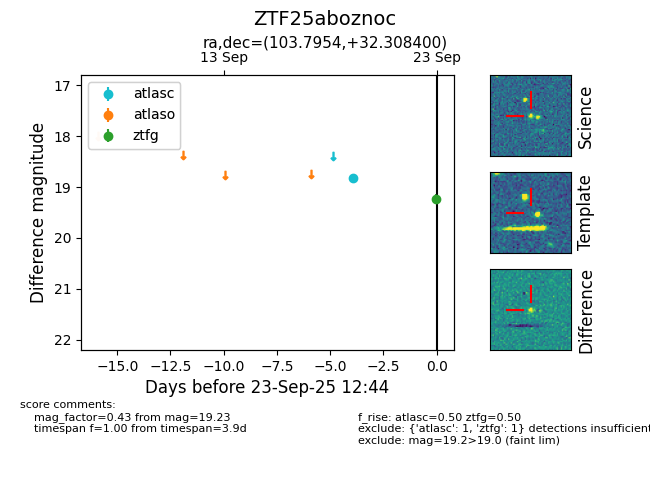

FINK: ZTF25aboznoc
Lasair: ZTF25aboznoc
ALeRCE: ZTF25aboznoc
ZTF25aboznoc (ztf,fink)
equatorial (ra, dec) = (103.7954,+32.30840)
galactic (l, b) = (183.8826,+14.83276)

last atlasc=18.82, ztfg=19.23
1 atlasc, 1 ztfg detections